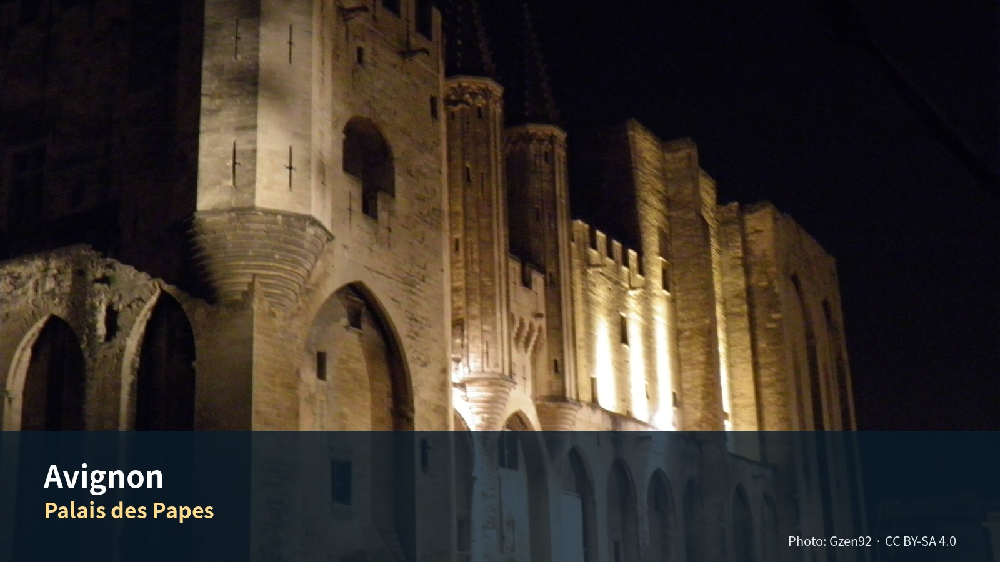

사진 저작자 표시
오프라인입니다. 저작자와 라이선스는 그대로 읽힙니다. 라이선스 전문과 원본 링크만 연결이 필요합니다.





사용 조건
- CC BY · CC BY-SA 의 저작자 표시와 라이선스 링크를 유지한다.
- CC BY-SA 사진을 수정한 파생본은 동일하거나 호환되는 조건으로 배포한다.
- 원본을 대체하지 않고 파생본임을 명시한다.
그 밖의 자료
- 본문 서체는 나눔고딕 (NHN Corporation · 디자인 Sandoll Communications) 이며
SIL Open Font License 1.1 로 배포된다.
CDN 을 쓰지 않고
assets/vendor/nanum/에 번들했다 — 오프라인에서도 뜬다. 라이선스 전문은 같은 폴더의LICENSE.txt다. - 색은 스페인·프랑스 국기색에서 뽑았다. 국기 원색을 그대로 쓰면 야외에서 읽히지 않는 값이 있어(스페인 노랑은 흰 바탕에 1.7:1) 글자용은 명암비를 맞춰 낮췄다.
- 편집 도식과 데일리 카드는 이 여행을 위해 직접 제작했다.
- 실행지도의 배경 타일은 OpenStreetMap 기여자들의 것이며 ODbL 조건으로 제공된다. 지도 라이브러리는 Leaflet (BSD-2-Clause) 을 로컬 번들로 쓴다.
- 주요 방문지 카드의 사진은 온라인일 때 Wikipedia 에서 불러온다. 각 사진의 출처는 사진 위 링크에 표시된다.
원본 표 — source/ASSETS/88_Representative_Public_Photo_Credits_v1.0.md.
빌드가 이 표와 대조해 저작자·라이선스가 어긋나면 중단한다.